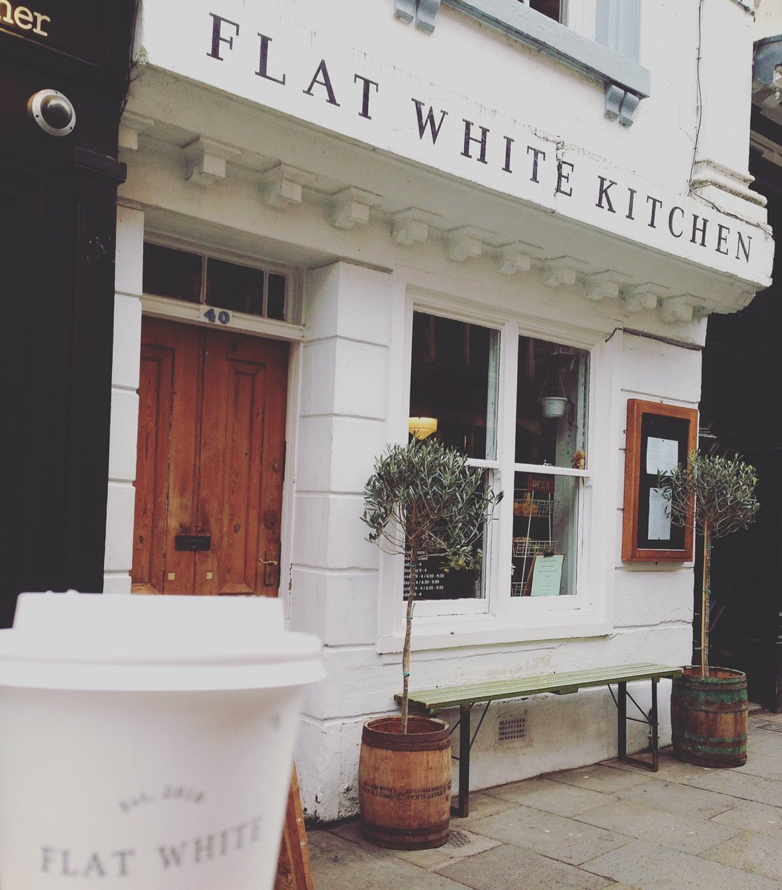
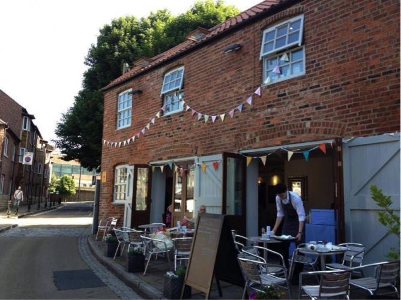
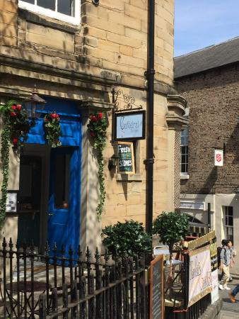
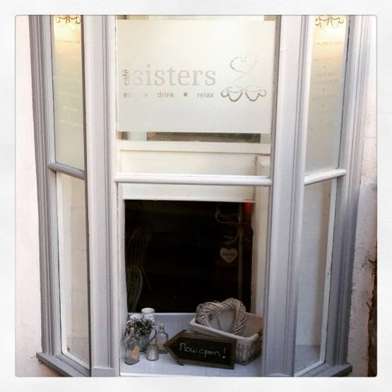
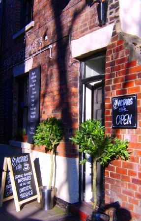

FOODIES
Home
(current)
About Durham
Places to Eat
Cafe's
Restaurants
Bars

Flat White
Serving some of Durham's best coffee and highly acclaimed food.

Leonard's Coffee House
One of Durham City's most popular eateries serving an exclusive coffee blend, homemade food and freshly baked sweet treats.

Cafédral
Asmall, family run business in Durham City with an eclectic taste for style and food.

Café Sisters
Cafe Sisters is located in the oldest building in Silver Street, Durham. Serving a selection of teas, coffees and delicious food.

9 Altars
This cafe sits in the shadows of Durham City’s magnificent cathedral, and is place to go for a big slice of freshly baked cake.
FOODIES
of Durham